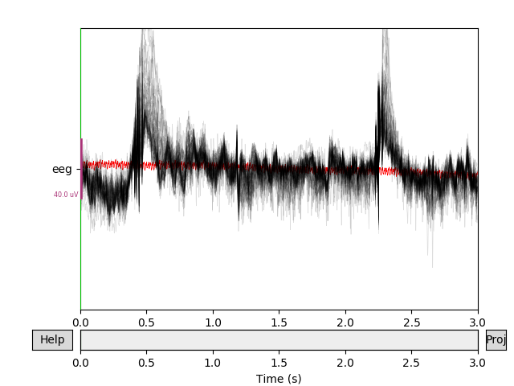
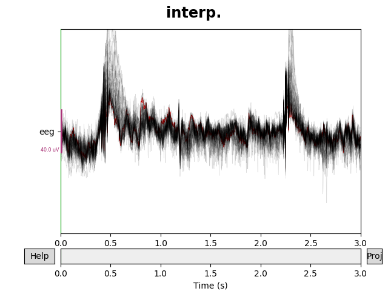
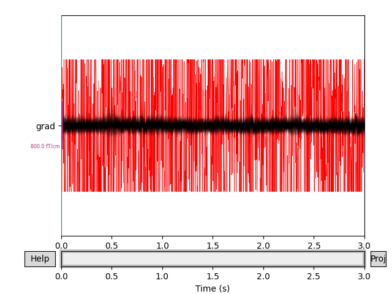
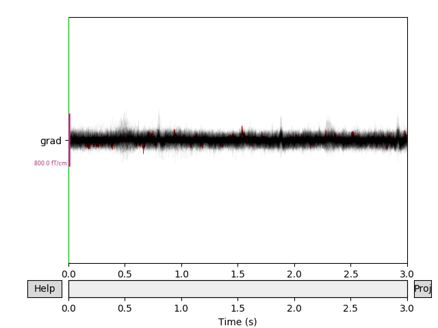

Note
Click here to download the full example code
Interpolating bad channels¶
This tutorial covers manual marking of bad channels and reconstructing bad channels based on good signals at other sensors.
Page contents
As usual we’ll start by importing the modules we need, and loading some example data:
import os
from copy import deepcopy
import numpy as np
import mne
sample_data_folder = mne.datasets.sample.data_path()
sample_data_raw_file = os.path.join(sample_data_folder, 'MEG', 'sample',
'sample_audvis_raw.fif')
raw = mne.io.read_raw_fif(sample_data_raw_file, verbose=False)
Marking bad channels¶
Sometimes individual channels malfunction and provide data that is too noisy
to be usable. MNE-Python makes it easy to ignore those channels in the
analysis stream without actually deleting the data in those channels. It does
this by
keeping track of the bad channel indices in a list and looking at that list
when doing analysis or plotting tasks. The list of bad channels is stored in
the ‘bads’ field of the Info object that is attached to
Raw, Epochs, and Evoked objects.
print(raw.info['bads'])
Out:
['MEG 2443', 'EEG 053']
Here you can see that the .fif file we loaded from disk must have
been keeping track of channels marked as “bad” — which is good news, because
it means any changes we make to the list of bad channels will be preserved if
we save our data at intermediate stages and re-load it later. Since we saw
above that EEG 053 is one of the bad channels, let’s look at it alongside
some other EEG channels to see what’s bad about it. We can do this using the
standard plot() method, and instead of listing the channel
names one by one (['EEG 050', 'EEG 051', ...]) we’ll use a regular
expression to pick all the EEG channels between 050 and 059 with the
pick_channels_regexp() function (the . is a wildcard
character):
We can do the same thing for the bad MEG channel (MEG 2443). Since we
know that Neuromag systems (like the one used to record the example data) use
the last digit of the MEG channel number to indicate sensor type, here our
regular expression will pick all the channels that start with 2 and end
with 3:
Notice first of all that the channels marked as “bad” are plotted in a light
gray color in a layer behind the other channels, to make it easy to
distinguish them from “good” channels. The plots make it clear that EEG
053 is not picking up scalp potentials at all, and MEG 2443 looks like
it’s got a lot more internal noise than its neighbors — its signal is a few
orders of magnitude greater than the other MEG channels, making it a clear
candidate for exclusion.
If you want to change which channels are marked as bad, you can edit
raw.info['bads'] directly; it’s an ordinary Python list so the
usual list methods will work:
original_bads = deepcopy(raw.info['bads'])
raw.info['bads'].append('EEG 050') # add a single channel
raw.info['bads'].extend(['EEG 051', 'EEG 052']) # add a list of channels
bad_chan = raw.info['bads'].pop(-1) # remove the last entry in the list
raw.info['bads'] = original_bads # change the whole list at once
You can also interactively toggle whether a channel is marked “bad” in the
plot windows of raw.plot() or epochs.plot() by clicking on the
channel name along the vertical axis (in raw.plot() windows you can also
do this by clicking the channel’s trace in the plot area). The bads field
gets updated immediately each time you toggle a channel, and will retain its
modified state after the plot window is closed.
The list of bad channels in the mne.Info object’s bads field is
automatically taken into account in dozens of functions and methods across
the MNE-Python codebase. This is done consistently with a parameter
exclude='bads' in the function or method signature. Typically this
exclude parameter also accepts a list of channel names or indices, so if
you want to include the bad channels you can do so by passing
exclude=[] (or some other list of channels to exclude). For example:
# default is exclude='bads':
good_eeg = mne.pick_types(raw.info, meg=False, eeg=True)
all_eeg = mne.pick_types(raw.info, meg=False, eeg=True, exclude=[])
print(np.setdiff1d(all_eeg, good_eeg))
print(np.array(raw.ch_names)[np.setdiff1d(all_eeg, good_eeg)])
Out:
[367]
['EEG 053']
When to look for bad channels¶
You can start looking for bad channels during the experiment session when the
data is being acquired. If you notice any flat or excessively noisy channels,
you can note them in your experiment log or protocol sheet. If your system
computes online averages, these can be a good way to spot bad channels as
well. After the data has been collected, you can do a more thorough check for
bad channels by browsing the raw data using mne.io.Raw.plot(), with any
projectors or ICA applied. Finally, you can compute offline averages (again
with projectors, ICA, and EEG referencing disabled) to look for channels with
unusual properties. Here’s an example of ERP/F plots where the bad channels
were not properly marked:

Out:
320 events found
Event IDs: [ 1 2 3 4 5 32]
320 matching events found
Applying baseline correction (mode: mean)
Not setting metadata
Created an SSP operator (subspace dimension = 3)
3 projection items activated
The bad EEG channel is not so obvious, but the bad gradiometer is easy to see.
Remember, marking bad channels should be done as early as possible in the
analysis pipeline. When bad channels are marked in a Raw
object, the markings will be automatically transferred through the chain of
derived object types: including Epochs and Evoked
objects, but also noise covariance objects,
forward solution computations, inverse
operators, etc. If you don’t notice the
badness until later stages of your analysis pipeline, you’ll probably need to
go back and re-run the pipeline, so it’s a good investment of time to
carefully explore the data for bad channels early on.
Why mark bad channels at all?¶
Many analysis computations can be strongly affected by the presence of bad channels. For example, a malfunctioning channel with completely flat signal will have zero channel variance, which will cause noise estimates to be unrealistically low. This low noise estimate will lead to a strong channel weight in the estimate of cortical current, and because the channel is flat, the magnitude of cortical current estimates will shrink dramatically.
Conversely, very noisy channels can also cause problems. For example, they can lead to too many epochs being discarded based on signal amplitude rejection thresholds, which in turn can lead to less robust estimation of the noise covariance across sensors. Noisy channels can also interfere with SSP computations, because the projectors will be spatially biased in the direction of the noisy channel, which can cause adjacent good channels to be suppressed. ICA is corrupted by noisy channels for similar reasons. On the other hand, when performing machine learning analyses, bad channels may have limited, if any impact (i.e., bad channels will be uninformative and therefore ignored / deweighted by the algorithm).
Interpolating bad channels¶
In some cases simply excluding bad channels is sufficient (for example, if you plan only to analyze a specific sensor ROI, and the bad channel is outside that ROI). However, in cross-subject analyses it is often helpful to maintain the same data dimensionality for all subjects, and there is no guarantee that the same channels will be bad for all subjects. It is possible in such cases to remove each channel that is bad for even a single subject, but that can lead to a dramatic drop in data rank (and ends up discarding a fair amount of clean data in the process). In such cases it is desirable to reconstruct bad channels by interpolating its signal based on the signals of the good sensors around them.
How interpolation works¶
Interpolation of EEG channels in MNE-Python is done using the spherical spline method 1, which projects the sensor locations onto a unit sphere and interpolates the signal at the bad sensor locations based on the signals at the good locations. Mathematical details are presented in Bad channel repair via interpolation. Interpolation of MEG channels uses the field mapping algorithms used in computing the forward solution.
Interpolation in MNE-Python¶
Interpolating bad channels in Raw objects is done with the
interpolate_bads() method, which automatically applies the
correct method (spherical splines or field interpolation) to EEG and MEG
channels, respectively (there is a corresponding method
mne.Epochs.interpolate_bads() that works for Epochs
objects). To illustrate how it works, we’ll start by cropping the raw object
to just three seconds for easier plotting:
raw.crop(tmin=0, tmax=3).load_data()
By default, interpolate_bads() will clear out
raw.info['bads'] after interpolation, so that the interpolated channels
are no longer excluded from subsequent computations. Here, for illustration
purposes, we’ll prevent that by specifying reset_bads=False so that when
we plot the data before and after interpolation, the affected channels will
still plot in red:
eeg_data = raw.copy().pick_types(meg=False, eeg=True, exclude=[])
eeg_data_interp = eeg_data.copy().interpolate_bads(reset_bads=False)
for title, data in zip(['orig.', 'interp.'], [eeg_data, eeg_data_interp]):
fig = data.plot(butterfly=True, color='#00000022', bad_color='r')
fig.subplots_adjust(top=0.9)
fig.suptitle(title, size='xx-large', weight='bold')
- 
- 
Note that we used the exclude=[] trick in the call to
pick_types() to make sure the bad channels were not
automatically dropped from the selection. Here is the corresponding example
with the interpolated gradiometer channel; since there are more channels
we’ll use a more transparent gray color this time:
grad_data = raw.copy().pick_types(meg='grad', exclude=[])
grad_data_interp = grad_data.copy().interpolate_bads(reset_bads=False)
for data in (grad_data, grad_data_interp):
data.plot(butterfly=True, color='#00000009', bad_color='r')
- 
- 
Summary¶
Bad channel exclusion or interpolation is an important step in EEG/MEG preprocessing. MNE-Python provides tools for marking and interpolating bad channels; the list of which channels are marked as “bad” is propagated automatically through later stages of processing. For an even more automated approach to bad channel detection and interpolation, consider using the autoreject package, which interfaces well with MNE-Python-based pipelines.
References¶
- 1
Perrin, F., Pernier, J., Bertrand, O. and Echallier, JF. (1989). Spherical splines for scalp potential and current density mapping. Electroencephalography Clinical Neurophysiology 72(2):184-187.
Total running time of the script: ( 0 minutes 10.906 seconds)
Estimated memory usage: 96 MB